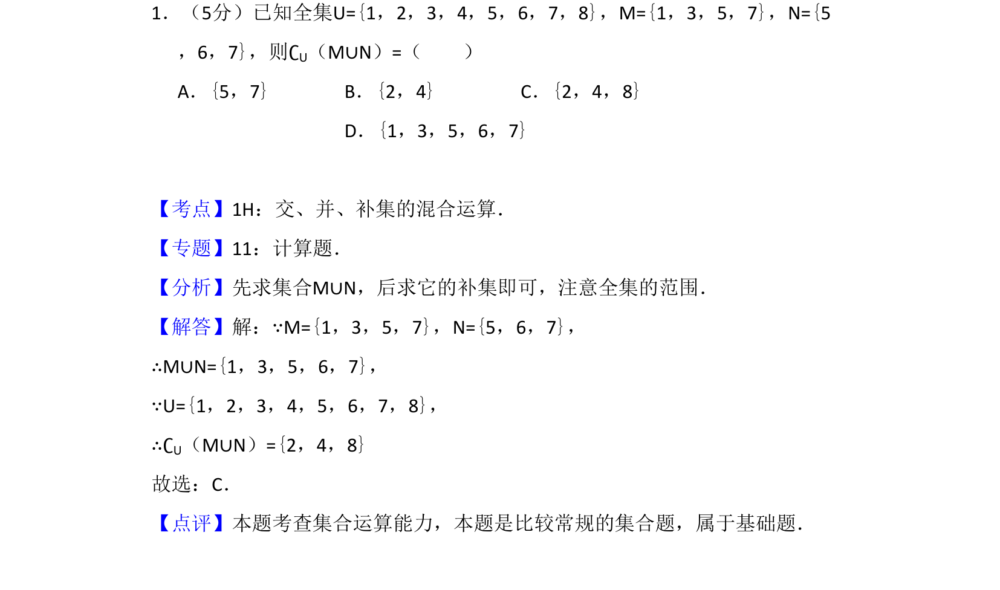
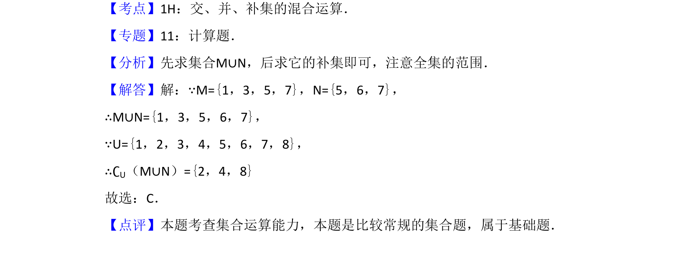

考点：集合运算 补集运算 并集运算

已知全集和两个集合，求并集的补集。

📄 原 PDF 第 1 页：
素材/真题/吉林/2008-2024·（吉林）数学高考真题/2009年高考数学试卷（文）（全国卷Ⅱ）（解析卷）.pdf
1．（5分）已知全集U={1，2，3，4，5，6，7，8}，M={1，3，5，7}，N={5 ，6，7}，则∁U（M∪N）=（ ） A．{5，7}B．{2，4}C．{2，4，8} D．{1，3，5，6，7}
【考点】1H：交、并、补集的混合运算．菁优网版权所有 【专题】11：计算题． 【分析】先求集合M∪N，后求它的补集即可，注意全集的范围． 【解答】解：∵M={1，3，5，7}，N={5，6，7}， ∴M∪N={1，3，5，6，7}， ∵U={1，2，3，4，5，6，7，8}， ∴∁U（M∪N）={2，4，8} 故选：C． 【点评】本题考查集合运算能力，本题是比较常规的集合题，属于基础题．